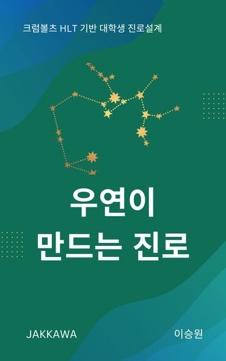

Career Transition Lab · 출간 전자책
우연이 만드는 진로
계획이 선명하지 않아도, 작은 행동과 경험으로 다음 선택의 단서를 만들 수 있습니다.
교보문고에서 책 보기 ↗
이런 독자를 위한 책입니다
진로가 막막한 대학생, 첫 직장 이후 방향을 고민하는 사회초년생, 학생의 진로 상담을 맡는 교수·상담사에게 맞는 책입니다.
책에서 다루는 질문
- 완벽한 계획이 없을 때 무엇부터 시도할 수 있을까?
- 예상 밖의 경험을 진로의 단서로 어떻게 해석할까?
- 호기심·인내심·유연성·낙관성·위험감수를 어떻게 연습할까?
읽고 나서 해볼 일
관심 있는 사람·활동·주제 중 하나를 정해 작은 탐색 행동을 계획해 보세요. 책에는 HLT 역량 진단과 성찰 워크시트가 수록되어 있습니다.
챕터별 강의용 PPT
교강사를 위한 챕터별 미니 렉처 슬라이드입니다. 자유롭게 다운로드해 수업에 활용하세요. 나머지 챕터는 순차적으로 추가됩니다.